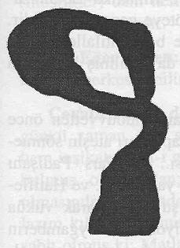

|
7.Mesele |
  
|
|
7.Mesele |
|
Yedinci Mesele
Hazret-i Muhammed Aleyhissalâtü Vesselâmýn izhar ettiði mahsus ve zahirî ve insanlarca meþhur ve malûm olan harika ve mu’cizelerinin ekserisi, tarih ve siyer kitaplarýnda mezkûrdur ve ayný zamanda, muhakkikîn-i ulema tarafýndan izah ve beyan edilmiþlerdir. Binaenaleyh, tafsilâtýný o kitaplara havale ile yalnýz o harikalarýn nevilerini icmâlen izah edeceðiz.
Evet, Peygamber Aleyhisselâmýn zahirî harikalarýnýn herbirisi âhâdî olup mütevatir deðilse de, o âhâdîlerin heyet-i mecmuasý ve çok nevileri, mütevatir-i bilmânâdýr. Yani, lâfýz ve ibareleri mütevatir deðilse de, mânâlarý çok insanlar tarafýndan nakledilmiþtir. O harikalarýn nevileri üçtür.
Birincisi: “Ýrhâsât” ile anýlmaktadýr ki, Hazret-i Muhammed Aleyhissalâtü Vesselâmýn nübüvvetinden evvel zuhur eden harikalardýr. Mecusî milletinin taptýðý ateþin sönmesi, Sava denizinin sularýnýn çekilmesi, Kisrâ sarayýnýn yýkýlmasý ve gaipten yapýlan tebþirler gibi þeylerdir. Sanki o Hazretin (a.s.m.) zaman-ý velâdeti, hassas ve keramet sahibi imiþ gibi, o zâtýn kudüm ve gelmesini þu gibi hadiselerle tebþiratta bulunmuþtur.
Ýkinci nevi ihbârât-ý gaybiyedir ki, bilâhare vukua gelecek pek çok garip þeylerden bahsetmiþtir. Ezcümle, Kisra ve Kayserin definelerinin Ýslâm eline geçmesi, Rumlarýn maðlûp edilmesi, Mekke’nin fethi, Kostantiniye’nin alýnmasý gibi hadisattan haber vermiþtir. Sanki o zâtýn cesedinden tecerrüd eden ruhu, zaman ve mekânýn kayýtlarýný kýrarak istikbalin her tarafýna uçup gezmiþ ve gördüðü vukuatý söylemiþtir ve söylediði gibi de vukua gelmiþtir.
Üçüncü nevi hissî harikalardýr ki, muaraza zamanlarýnda kendisinden talep edilen mu’cizelerdir. Taþýn konuþmasý, aðacýn yürümesi, ayýn iki parçaya bölünmesi, parmaklarýndan su akmasý gibi. Tefsir-i Keþþâf’ýn müellifi Zemahþerî’nin dediðine göre, o Hazretin bu nevi harikalarý bine bâlið olmuþtur. Ve bir kýsmý da mütevatir-i bilmânâdýr. Hattâ Kur’ân’ý inkâr edenlerden bir kýsmý, inþikak-ý kamer mânâsýnda tasarruf etmemiþlerdir.
S: Ýnþikak-ý kamer bütün insanlarca kesb-i þöhret etmesi lâzým bir mu’cize iken âlemce o kadar þöhret bulmamýþtýr. Esbabý nedir?
C: Matla’larýn ihtilâfý ve havanýn bulutlu olmasýnýn ihtimali ve o zamanda rasathanelerin bulunmamasý ve vaktin uyku gibi gaflet zamaný olmasý ve inþikakýn âni olmasý gibi esbabdan dolayý, herkesçe o vak’anýn görünmesi ve malûm olmasý lâzým gelmez. Maahaza, Hicaz matla’ýyla matla’larý bir olan yerlerde, o gece yollarda bulunan kervan ve kafilelerden naklen, inþikakýn vukua geldiði hakkýnda çok rivayetler vardýr.
Üçüncü nevi mu’cizelerin reisi ve en büyüðü Kur’ân-ý Azimüþþandýr ki, yedi vecihle mu’cize olduðuna mezkûr âyetle iþaret edilmiþtir.
---------------------------------
(1): Diyarbakýr’da Van Valisi Cevdet Beyin evinde 19 Þubat 1330 tarihinde Cuma gecesi bu tefsirin ilk Arabî nüshasýný tebyiz ederken, þu þekl-i garib, tevafukan vaki olmuþtur. Ve o gece vukua gelen Bitlis’in sukutuyla müellif Bediüzzaman’ýn esaretine rastgelir. Sanki þu þekl-i garibin, þu mu’cizeler ve harikalar bahsinde o gece husule gelmesi, müellifin Ruslara esir düþtüðüne ve beraberinde bulunan bazý talebelerinin þehid olarak kanlarýnýn dökülmesine harika bir iþarettir. Said’in Küçük Kardeþi Yirmi Senelik Talebesi Abdülmecid
Ve keza bu nakýþ, baþý kesilmiþ bir yýlanýn, kuyruðunu müellif Bediüzzaman’a sarmýþ olduðuna ve müellifin yaralý olarak otuz saat ölüme muntazýran su arkýnýn içinde kaldýðý yere benziyor ve o vaziyeti andýrýyor Eski Said’in Ehemmiyetli Talebesi |
 |